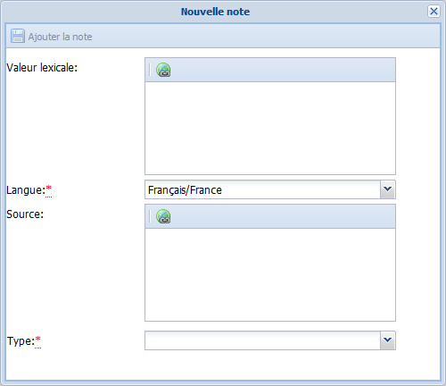
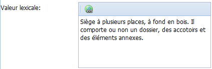
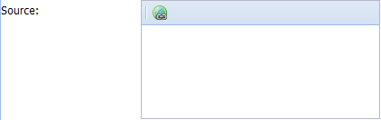
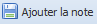

Notes
Notes ?⚓
ConceptNotes⚓
Des notes peuvent être ajoutées par un utilisateur sur les Concepts et les Termes.
Elles peuvent être de différents types ; certaines détaillent l'élément et sont exploitées dans les exports du vocabulaire, d'autres sont des notes de gestion internes à l'application.
Réglementaire
Type de note | Usage |
|---|---|
Note d'application | Définir l'étendue du |
Note historique | Préciser l'historique des modifications apportés au Concept au sein du vocabulaire. |
Exemple | Donner un exemple. |
Type de note | Usage |
|---|---|
Note éditoriale | Note de gestion interne destinée aux gestionnaires du vocabulaire. |
Note historique | Préciser l'historique des modifications apportés au Terme au sein du vocabulaire. |
Définition | Définir le Terme. |
Ajout de notes⚓
ProcédureAjouter une note⚓
RemarqueRemarque⚓
Cette procédure explique à la fois comment ajouter une note à un Concept et à un Terme.
Sélectionnez l'onglet
Notes du conceptouNotes du Termeen bas de l'élément actif.La liste des notes de l'élément s'affiche dans la zone d'édition du vocabulaire.
Cliquez sur le bouton

Ajouter une note.La fenêtre
Nouvelle notes'affiche.
Complétez les champs de cette fenêtre puis cliquez sur

Ajouter la note.AttentionImportant⚓
Les champs suivis d'un astérisque rouge sont obligatoires.
Le note est créée. Elle est automatiquement classée par ordre alphabétique dans la liste des notes de l'élément (
ConceptouTerme).
Cliquez sur le bouton
Enregistrerde l'élément (ConceptouTerme) pour sauvegarder vos modifications.
Édition d'une note⚓
ÉcranÉditer une note⚓
Vous trouverez ci-dessous des indications sur la manière de modifier, compléter une note d'un Concept ou d'un Terme.
RéglementaireAfficher la note⚓
Affichez la liste des notes de l'élément concerné (Concept ou Terme), puis double-cliquez sur la ligne de la note que vous souhaitez modifier.
> La note s'ouvre dans une sur-fenêtre.
AttentionImportant⚓
Les champs suivis d'un astérisque rouge sont obligatoires.
- 1 Valeur lexicale
Saisissez le contenu rédactionnel de la note.
Pour ajouter des liens externes (vers une URL, une adresse courriel...) , sélectionnez un (ou plusieurs) mot et cliquez sur le bouton
 .
. - 2 Langue
Sélectionnez dans la liste déroulante la langue de la note.
- 3 Source
Saisissez des informations sur les ressources (papier ou en ligne) ayant servi de sources à l'élaboration de la note.
Pour ajouter des liens externes (vers une URL, une adresse courriel...) , sélectionnez un (ou plusieurs) mot et cliquez sur le bouton
. - 4 Type
Sélectionnez dans la liste déroulante le type de la note.
- 5 Ajouter la note
Cliquez sur le bouton
Ajouter la notepour la mettre à jour parmi la liste des notes.Cliquez sur le bouton
Enregistrerde l'élément (ConceptouTerme) pour sauvegarder vos modifications.